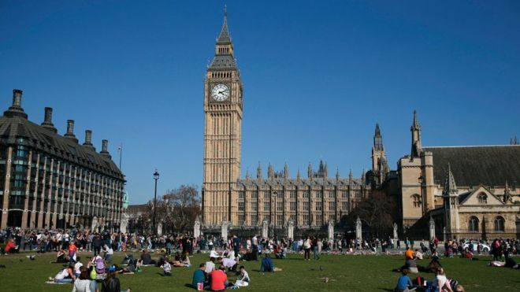
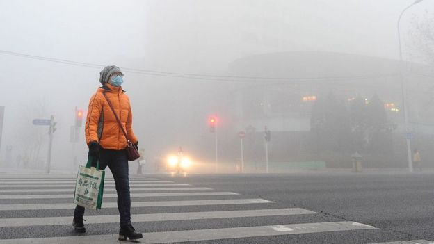

胡润：中国富人移民对英国兴趣下降
新闻来源:http://www.bbc.com/zhongwen/simp/business-40640591
发稿日期:2017/7/18

300位“高净值人士”参加了此次调查。 (GETTY IMAGES)
一份最近发布的报告称，中国富裕人群海外移民目的地国家中，英国排名下降，被加拿大超过。
美国仍然是中国富豪最青睐的移民目的地，加拿大排名第二，英国名列第三。
调查结果发现，在填写了问卷的中国富豪中，一半左右有移民海外的打算。
促使他们考虑移民的主要因素包括，污染、教育以及人民币汇率。
《胡润报告》访问了304名净资产在150万到3000万美元的中国人，其中一半居住在北上广深四座城市。
胡润说，"教育和污染问题促使中国富裕人群考虑移民海外。"
"如果中国能够解决这些问题，就能打消他们移民的主要动机，"胡润说。

中国日益严重的空气污染成为富人群体考虑移民的重要原因。 (GETTY IMAGES)
这份报告没有具体说明为何英国的排名跌落到加拿大之后。
中国富裕人群海外移民的目的城市方面，洛杉矶排名第一，随后是西雅图、旧金山以及纽约，伦敦只排名第14。
去年11月，中国的人民币汇率跌至8个月来的最低。这显然也是中国富裕人群考虑移民的原因。
84%接受调查的人对人民币贬值表示担心，并认为这是促使他们移民海外的一个主要因素。